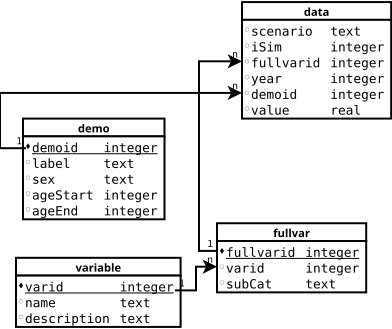

Version 4 of mccli uses new Fortran code for the Heart Failure model. As explained more fully in the User Guide, the older versions emited a bunch of human-friendly formatted files, which mccli processed using various Python programs. The new Fortran model continues to emit all those files, and we continue to process them exactly as before, at least for now. But the new code also emits 3 .csv files with all of the new and most of the old variables. The code developed here adds the ability to cope with this to mccli.
JavaScript
SQLite3.csv Files.csv) File
monte.conf
This file, v4.literate, is designed to be processed by the literate extension to Visual Studio Code. To work with it you will need to install VSCode and then, from within it, install the literate extension.
The diagrams for this and other documents were created with Dia; if you want to modify them, you will need to install it.
.literate files are in markdown format. That means they should be readable and editable as text files. It also means they can be nicely formatted; VSCode has commands that let you preview the results, and the preview will update as you make changes.
See Notes.md for much other information about the internal workings of the system, including fuller discussion of .literate files and the build procedures.
Outputs from running the command Literate: Process in VSCode will be a v4.html, the human friendly description of the program--perhaps what you are reading now--in this directory and code files in bin/js/. The output files appear below after fragment names that end in the literal .*, e.g., <<section name.*>>= ./bin/js/something.js $.
The monte carlo supervisor repeatedly generates random input files for the model, runs the Fortran program to get their implications (i.e., output files), and processes the results. The code in this document concerns how it processes the new, .csv, output files introduced in version 4 of mccli and shown in the picture above.
The strategy is to piggy-back on a previously used method of storing results for many simulations by putting them in a database. We will use the same database, SQLite3, in the same format--same tables, column names and indices--as before. bin/python/frmtToData.py created such a database (from an entirely different set of inputs) and frmtReport.py, a GUI, read it to produce human friendly reports.
SQLite3 is a simple database: everything is stored in a single file and there is no separate database manager.
There are hundreds of variables in the 3 .csv files, which feature mostly non-overlapping sets of variables distinguished by their likely use. It is likely only a relatively limited set will be of interest and so there is a configuration file monte.conf that tells this program which variables from the .csv files to preserve in the database. The rest will be overwritten with each iteration.
The database also allows for variables to have fuller descriptions in addition to their names; CVDPM_HF_Variable_List.csv provides that information. It could potentially be used as a check or restriction on the variables in monte.conf, or even those in the .csv files (which include a header line with variable names) but we aren't doing that now. It might also provide a quick way to say which variables a given monte.conf had selected (since it can use patterns), but that's not a goal for the first round.
The old strategy, which remains active for now, was to make copies of each desired output file (and some input files) with iteration numbers appended to the file name. All the file copying and renaming came with some overhead since disk operations are slower than number-crunching. That overhead would presumably be even higher with the more extensive outputs of the new model.
There are a lot choices already embedded in the description above. The new Fortran code's output formats and names are already wired in, and changing them is likely to be slow. There would also be some advantages to doing the variable restrictions in Fortran so that it never even writes out (or computes?) variables that aren't needed. Likewise it might be preferable for the Fortran program to at least have an option to write output to a pipe so the receiving program could take it without it ever needing to touch the disk.
Turning to the code here, SQLite3 is far from the only choice of a data store, and it may yet prove to have sufficient problems with speed or disk space to merit a switch to something else. Initial testing has shown that it is not very space-efficient compared to pure binary storage of the results; adding information to the database seems to take about as much space as the original .csv files, perhaps because SQLite stores almost everything as a string.
But we provisionally take all those matters as given, and move to the first high-level choice.
Given that the existing code to work with the database is in Python and that most helper tasks are done by Python programs, not to mention the current author's familiarity and fondness for the language, it at first seemed the obvious choice.
However, using it would come at a cost. Our Python programs are mostly one-shot affairs. While this problem could be handled that way, it seems more natural and efficient to have a long-running task. And there are coordination problems: the Fortran outputs do not include the iteration number because the Fortran program has no idea it's in a monte carlo simulation. But the database requires a simulation number. So that informtion would have to get from the Javascript simulation supervisor to the process gathering input. And the program that collects the input has to tell the supervisor when it is safe to proceed with the next simulation.
So the end result seemed to be a lot of coordination problems, not to mention managing a long-running Python process.
All of which led me to decide, on balance, to keep these data gathering functions within the Javascript system that manages the simulations. Which, of course, came with its own set of problems (e.g., neither JavaScript nor Node seem to have a native "read one line of a file" command!).
There are 3 kinds of input files:
.csv files with the data, which will be written by the Fortran program and read by the code below repeatedlymonte.conf specifying which variables in which .csv files to preserve in the databaseCVDPM_HF_Variable_List.csv.The last 2 only need to be read once at the start, given the decision to have a persistent process managing the first.
We will divide the code into classes, with one for each kind of input. Reading the files is not too challenging, but the classes will also manage interpreting them as the data are processed.
There is one output file holding the database; the class that reads the .csv files is also responsible for writing to it.
JavaScriptJavaScript running under Node.js has 2 module systems, the original CommonJS used by Node.js and the newer and now standardized ES6 (ECMAScript v6), now also available in Node.js. Using them employs different syntaxes; modules built for one generally don't work in the other, and there are a host of differences in the semantics of each. The 2 coexist uneasily, and it's simplest to work with one or the other.
mccli was developed using CommonJS and most of the modules it uses are available in that form and may not be available as ES6. So this code will continue to use CommonJS modules.
That said, ES6 is probably the wave of the future, and modules are likely to be increasingly available in that format. One of the key modules mccli uses, inquirer, is only available in ES6 format for recent releases, leading this package to restrict it to earlier versions in package.json
Each file is a module, and it seems fairly conventional to put a class definition in a file so that importing the file creates the class.
I haven't been able to find a clear statement about namespaces for CommonJS modules, in particular whether a module needs to import (via require) a module already present in the parent. This discussion of ES6 seems pretty clear that the import must be done within the module, saying that only global variables are accessible from the module. But aren't imported modules global vaiables?
At any rate, redundant imports should be cheap since the results are cached, and experimentation shows that CommonJS modules, like ES6, must be imported separately in each file.
JavaScript now has a syntax for declaring classes, which we will use. However, JavaScript Objects are really all of the same type, and JavaScript itself barely has types: variables and functions are not declared with types.
JavaScript does have a prototype system in which one object--not class--serves as a prototype for another. The class system is actually just a syntactic gloss on prototypes.
TypeScript adds strong typing to JavaScript. Microsoft developed it and seems keen on it; for example, VSCode is written in TypeScript.

Node.js's fundamental execution model is asynchronous: function calls usually trigger some activity but return immediately, before it is done. This was done to enhance overall responsiveness, e.g., for web servers handling many separate requests. Many actions--getting a response from a remote user, accessing a local file, or querying a database--take some time to complete and that time can be spent doing something else.
Since mccli could in principle run multiple simulations simultaneously this seems like a natural fit. Unfortunately, the current design of the Fortran model, which has many hard-coded file names and locations, makes it very difficult to run more than one copy at a time. And many actions, such as creating a directory and then putting files in it, are inherently serial.
So mccli uses the synchronous version of a lot of calls, particularly file-oriented ones, and the overall design is synchronous. For example, one would not want to process the outputs of the Fortran program before it completes.
Practical implications:
JavaScript things may happen asynchronously unless you take special steps, like calling variant function names or using JavaScript's native sequencing constructs, to prevent it.JavaScript than in most other languages.SQLite3Because we are reading in data from up to 3 different files and putting them all in the same database, and because javascript is asyncronous, it seems natural to have separate functions reading from each file and writing to the database. For the underlying database, i.e., independent of the interface, the following considerations matter:
SQLite's default mode serializes all access to the database. So multiple programs, processes and threads are safe, albeit not necessarily fast. This may fail in some circumstances, e.g., NFS lacks proper locking semantics.INSERTS a second are feasible (assuming wrapped in a single transaction).For the better-sqlite3 package we use
Database.transaction() can not be an async function. And "because SQLite3 serializes all transactions, it's generally a very bad idea to keep a transaction open across event loop ticks anyways." So it is not just formally async functions but any function with asynchronous behavior (e.g., using callbacks or Promises) that won't work.The first part of getting the data is reading a file; the n-readlines package is my preferred tool. It is also synchronous and only reads a line at a time.
Finally, note that javascript async functions can only be called from within other async functions.
One alternative is to use synchronous code only; in that case we would go through each simulation data source at a time, first reading the csv and then creating or updating the database. There is no need for locks since there is only a single thread of execution in my code. It may block, but it is not a web server that needs to be responsive. And SQLite can run in its most dangerous, lockless, mode: Single-thread.
At one point I was concerned that even apparently synchronous code could operate out of sequence, e.g., if it was blocked on a read other javascript code might run. But the language appears to guarantee that can't happen.
The downside of the synchronous approach is that reading the csv files and writing to the database, activities that could be done in parallel, are all done serially and may be slower.
But it's simpler and less error-prone; so that's what I'll do. Another advantage is that a more parallel approach would likely require holding all input csv files in memory at once.
We could explore asynchronous approaches later, being sure to test to see if they make any material difference in performance.
Concretely, a data source is one particular named .csv file that holds data from a run of the Fortran model. In the future it may also be a particular named pipe whose contents are in the same format. This class collects all relevant information from all files about one of those data sources, and knows how to read the data source and store the relevant results.
This is the successor to the CSVConfig file in the next section, and roughly corresponds to the unnamed structure, often referenced by variables named cfg or cfg in the test code.
Almost all the configuration ends up in this object: the variable patterns in monte.conf, the codebook information, and the actual headers and columns of interest. Of course, only the subset relevant to a particular file type goes here. And if the data source is not mentioned in monte.conf the object is skipped entirely.
The information is built up in stages:
VariableConfiguration class reads monte.conf and creates a SimDataSource if it encounters the relevant section.VariableConfiguration informs SimDataSource of each pattern it finds.Codebook reads the relevant file and extracts the entries for each SimDataSource (if any) and informs SimDataSource of them.SimDataSource reads its main data input for the first time.
SimDataSource
const nReadLines = require('n-readlines'),
path = require('path'),
sqlite = require('better-sqlite3');
const { error } = require('./v4-logging');
const sep = ",";
These give the locations of fixed demographic columns in the .csv files. We could look them up each time, but the locations are fixed. If we wanted to be fancy we could put them in a prototype to be shared among instances.
The values are const but JavaScript does not permit that in a class definition.
The demographic columns are most of the index for the data values that go in the database.
Note there are 2 available columns with the year, one giving years since start of simulation and the other calendar year. The choice below is calendar year. Set year = 1 to get simulation years, which are 1-based (the two 1's are completely different uses).
age and sex use numeric codes; their interpretation is discussed elsewhere.
const year = 0;
const age = 2;
const sex = 3;
const keyCols = [year, age, sex];
.csv Filesconst dataPath = path.join(".", "outputs");
We start with only the file name from the monte.conf section header. At this point there may not be any actual output files to rely on. There are a number of design issues to consider.
It would be nice to convert filenames to a standard case to ease matching. But file systems vary in case sensitivity: some are case sensitive (Unix) while others aren't (MS-Windows usually, though it is case-preserving). A case-preserved name may fail to match the actual file name. See these useful notes on the vagaries of different file systems (which include both case and encoding) and how to handle them in Node.js.
We (almost) know the files will all end with a .csv, and so I originally said this could be omited. But if the file system is case-sensitive, adding .csv to the name won't work if the actual end is .CSV.
The simplest approach, programmatically, is simply to require the user to specify the file name, including the extension, in the appropriate case. The simplest approach for the user is for the program to work out the extension, and for that reason that was the original behavior of my test code and documentation in the User Guide. Despite the fact that adding .csv will work fine on MS-Windows, even if the real extension is .CSV, supporting it in general is a mess.
For now, we recommend providing the file extension and warn of possible problems if the real files don't end with lowercase .csv on case-sensitive file systems. This is asking a fair amount of the user since the real files don't even exist until the run starts. Also we are not requiring the user to know the directory they are in. Since they are produced by our Fortran code we should know the extension case, but the vagaries of different libraries and operating systems still imply some uncertainty about what we'll get.
monte.conf may include a section header that is incorrect--misspelled, or in the wrong case. As noted above, there may not be any real files to check at the start. We could just wait until their actual use proves impossible, but that seems annoying for the users. In the worst case the simulation would proceed and the absence of desired information would only be caught later. Instead, the program does a case insensitive match to the 3 possible legitimate values and reports an error immediately if it fails.
It is the responsibility of the code that creates an instance of this class to assure the name is valid.
To Do This will not catch case-only differences. Should they, or various other problems arise, we should abort the simulations, rather than letting the same error occur for each one.
This is instantiated while scanning monte.conf before the .csv files it describes have been created. So the information in here is built up gradually: first the variable patterns of interest, then the specific variables and locations (columns) of those variables on first encounter with the data, and finally subsequent reads of the file will verify the columns match and pull out the data.
The argument is a filename including an extension. This class is responsible for knowing the path. basename is a string with the core name of the input, e.g, "totresults" and ifname is the full name, without the path, e.g., "totresults.csv". The latter is potentially case sensitive, depending on the underlying file system.
The private variables #patterns and #byvar must be "declared" before use to avoid the error "private field #xx must be declared in enclosing class".
#patterns;
#byvar;
constructor(basename, ifname) {
this.basename = basename.toLowerCase();
this.ifname = ifname;
this.ifpath = path.join(dataPath, ifname);
this.#patterns = new Map();
this.#byvar = new Map();
}
A # as the first character in a variable name make it private to the class, not accessible from outside.
#patterns holds individual patterns used to select variables to preserve in the database. The raw string is the key, and the RegExp derived from it is the value. The keys allow fast lookup for "patterns" that are simply variable names. They are removed when matched, meaning they can only be matched once. If none match, exhaustive search through the regex's is the only alternative.
#byvar will eventually have variable names as keys and a description as a value. That is built up later, when reading the codebook file. It includes all possible variables, not just those of interest.
The keys in both Map's are always converted to lowercase.
In monte.conf a user specifies a list of variables, and patterns for variables, to preserve in the database. The next method is used to record those choices. text is the plain text representation for the common case in which the "pattern" is just a variable name; regex is a regular expression object that corresponds to it.
We convert the key to lowercase to simplifying matching on it; this means the key may not match the case known to the user.
addPattern(text, regex) {
this.#patterns.set(text.toLowerCase(), regex);
}
addVarDescription(varname, description){
this.#byvar.set(varname.toLowerCase(), description);
}
Once the complete list of variables is loaded in #byvar we check that every pattern for an allowed variable matches the name of at least one actual variable. We work on a copy so that we can delete entries as an optimization.
The result of this function is a Map with regex's as keys and a value which is a count of the number of variables it matches and a list of concrete variable names.
countPatternMatches() {
let pats = new Map(this.#patterns);
let result = new Map();
let myvar = new Set(...this.#byvar.keys());
const vs = [...pats];
for (const [txt, re] of vs) {
if (myvar.has(txt)) {
result.add(re, [1, [txt,]]);
pats.delete(txt);
myvar.delete(txt);
}
}
const p2 = [...pats];
for (const [txt, re] of p2){
let matched = [];
for (const v of myvar){
if (re.test(v)){
matched.push(v);
}
}
matched.forEach(v=>myvar.delete(v));
result.add(re, [matched.length, matched]);
}
return result;
}
One thing we can do with the result is to check if any patterns don't match any of the variables. Since that probably indicates a typo, we alert the user and stop.
The argument to the next function is the Map output by the previous function.
checkLostPatterns(counts){
let missing = [];
for (const xx of counts){
let re, [count, vs] = xx;
if (count==0)
missing.push(re);
}
if (missing.length == 0)
return;
console.log("The following patterns in monte.conf don't match any variables.");
error("Check for typos: "+missing.join(" "));
}
Finally, get the list of concrete variables that matched. Note that all such variables may not be in the .csv file, but it seems easier to test against this list than against the specification with regular expressions.
Returns a Set of variable names.
concreteVars(counts){
let result = new Set();
counts.values().forEach(([n, vs])=>vs.forEach(v=>result.add(v)));
return result;
}
Once we have loaded the patterns and variable definition, but before seeing a .csv file, we summarize the data and do some sanity checks.
We don't currently do anything with master but it seems more general to include it.
prepare(master){
this.counts = concretePatternMatches();
checkLostPatterns(this.counts);
this.allMatchingVars = concreteVars(this.counts);
}
At each iteration this function is called with the iteration number. On the first read we record the header and calculate which columns are of interest. On later reads we merely verify the header matches what is expected. Then we read the actual data lines.
This opens the input file at each iteration, which should be robust against the Fortran program creating the file on each run. It's possible the Fortran program overwrites the file in place, in which case there might be some efficiencies in keeping the file open and simply seeking to the start.
If the data source is a pipe, the logic here might need to be different; the pipe almost certainly is persistent.
read(master, iter, scenario){
this.reader = nReadLines(this.ifpath);
readHeader(master);
readBody(master, iter);
}
readLine() {
return this.reader.next().toString('ascii');
}
readHeader(master) {
line = readLine();
if (this.header){
if (this.header != line){
warning(`${this.ifpath} original header was ${this.header}`);
warning(`But current file header is ${line}`);
error("Mismatch. Can not proceed safely.");
}
} else
setupForHeader(master, line);
}
.csv) FileAfter this step the SimDataSource has header with the column headers for the file and interest a Map whose keys are individual variables of interest in the file and values are the column index of that variable. readCols is an array of the column indices of interest in the .csv. Both variables explicitly mentioned in monte.conf and the key identifiers (demographics, simulation year) are "of interest".
It is the caller's responsibility to assure this is only called once for each SimDataSource and that subsequent headers match the initial one.
Creates this.header with the header line, for use as a check when reading later iterations, and this.interest, an Array of objects describing the data columns of interest. Those objects contain name, the variable name, icol, the index of the column with the value, and, eventually, fullvarid, the id of the variable name in the database.
The interest list does not include any of the index values (e.g., demographics, year).
setupForHeader(master, line){
this.header = line;
this.interest = [];
vs = line.split(sep);
for (const [i, v] of vs.entries() ){
if (this.allMatchingVars.has(v)) {
this.interest.push({name: v, icol: i});
}
}
setupDatabase(master);
}
This is the first point when we know which specific variables we will be saving in the database, and so we can do the initial setup of the database
"Setting up" the database involves 3 separate steps:
SimDataSource.1 and 2 should probably be in a separate function, which could be run asynchronously at the start of runSims, or perhaps after monte.conf has been scanned to determine if anything is to be written to the database.
At the end of this function master.db will hold a handle to a database initialized with appropriate tables with all the variables for this SimDataSource having descriptive entries.
There are some issues.
SQLite, which we are currently using, stores all information in a single file. So we need to know where to put it and what to call it. The top-level program, mc (not in this document or directory) provides command-line options --dbfile and --dbpath to specify either or both; the default is MC/results/hfmc_results.sqlite. Note that the directory MC/results ordinarily does not exist until mc init has been run.
It may be that the database file already exists. Since it may have results, simply deleting it seems undesirable. We could refuse to run, but that would make it impossible to resume interrupted runs (not currently supported, but hopefully someday) or to add simulations of more scenarios. So we will allow it to proceed. Note this does carry the risk that the database will end up with the same information twice--actually, that might cause a duplicate key error on attempted insert--or even with 2 different values for the same keys.
We could potentially check that the database is valid, or even that it is consistent with the run we are doing. But for now we simply assume that if we find the file it is in the correct format, both that it is a SQLite database and the necessary tables have been defined. If we have new variables, they will be added if they are not already present.
SimDataSource's, One DatabaseThe code to setup the database, in the sense of creating the file, defining the tables, and creating the in-process representation of the database, is here on the SimDataSource, but there may be several such sources. The initial setup should only happen once. The main approach is to check if master shows the database has been set up and skip those other steps.
I think that part of the code is sequential and that should be adequate, but given Node.js's asyncronous default, and the fact that I might want to optimize by handling each data source in parallel, some more robust protection against a race may be necessary.
One potential problem is in the 3rd step mentioned earlier, inserting information about specific variables (e.g., name, description) into the database. We know that the key variables, e.g., sex, will appear in multiple files. Other variables might appear in more than one file or, as mentioned above, have already been defined in a previous run. The procedure checks if a variable is already defined, and only inserts it if it isn't. That should protect agains all those potential problem.
setupDatabase()setupDatabase(master){
if (!master.db)
createSkeletonDB(master);
defineVariablesInDB(master);
}
Given the current, single-threaded, synchronous, design, opening the database in Single-Thread mode is safe and most performant. The better-sqlite3 docs say it builds SQLite with SQLITE_THREADSAFE=2, which is Multi-thread mode.
SQLITE_THREADSAFE=0, Single-Thread mode, is the fastest.
While the underlying SQLite allows setting the threading mode at compile, startup, or run time (provided the compilation did not specify Single-Thread mode, which it didn't), better-sqlite3 does not appear to offer any run-time hooks to change it. The run-time interface in C allows threading mode to be specified as an argument to sqlite3_open_vs(), but the better-sqlite3 Database constructor does not offer it as an option. Start-time specification in C is via sqlite3_config(), which also is not exposed by better-sqlite3.
Since there is no good way to do otherwise, we will go with the default Multi-thread mode, which is safe and robust against design changes in this program, but not as fast as possible.
createSkeletonDB(master){
this.dbFullPath = path.join(master.dbpath, master.dbfile);
existingDB = fs.existsSync(this.dbFullPath)
master.db = new sqlite(this.dbFullPath);
master.db.pragma('journal_mode = WAL');
if (existingDB) {
return;
}
makeDBTables(master);
fillDemographicTables(master);
}
Here's a small part of a typical formatted table of results:
| CHD DEATHS | ||
|---|---|---|
| Age/Sex Breakdown | ||
| Year | M35-44 | M45-54 |
| 2018 | 4138 | 15267 |
| 2019 | 4154 | 14963 |
The interpretation of each number depends on its position in the grid. Call this a "wide" representation of the data.
In contrast the database uses a "tall" represention of the data. Conceptually it might look like this:
| variable | Year | Sex | Age | Sim # | Value |
|---|---|---|---|---|---|
| CHD DEATHS | 2018 | M | 35-44 | 10 | 4138 |
| CHD DEATHS | 2018 | M | 45-54 | 10 | 15267 |
| CHD DEATHS | 2019 | M | 35-44 | 10 | 4154 |
| CHD DEATHS | 2019 | M | 45-54 | 10 | 14963 |
This offers several advantages.
| Year | CHDM35-44 | CHDM45-54 |
|---|---|---|
| 2018 | 4138 | 15267 |
| 2019 | 4154 | 14963 |
But that means columns must be defined for every variable, and there are hundreds of possible variables---even without making year or demographic category part of the name. In contrast, the approach taken extends easily as one adds variables, and it only requires the database to hold the variables used.
The obvious drawback of the "tall" format is that each index value (e.g., variable name, year, sex, age, simulation number in the above example) must be repeated for each observation. Depending on how clever the database is, this may or may not take up as much space on disk as one would expect: strings may be compressed or shared between rows, for example. Another problem is that the indices themselves may have some internal structure. For example, if a demographic category like M45-54 is the index, it may have several associated values, for example sexcode=M, sex=Male, agerange=45-54, youngest=45, oldest=54, widthInYears=10, label="middle-aged men". Variables can be even more complex with short and long names, descriptions, and relations between variables.
To help with the problems associated with bulky or complex index values, we create auxiliary tables that give the full information on the index values, and simply refer to them with an id in the main data table.
So each row in the data table looks conceptually like this:
| fullvarid | demoid | year | value | other stuff |
fullvarid indicates which variable the value is for; fullvarid is the index of a row in the fullvar table. Similarly, demoid indicates which demographic group in the demo table the value is for. year and other variables indicate more precisely exactly which value is reported in this row.
The database is designed to accommodate groups of variables that have the same name, but represent different things; the formatted reports often show the breakdown as subheads. For example, a table for "CHD Deaths (Bridge)" is broken into columns for "Case Fatality Rate (%)" and "Population". Hence there is a distinction between potentially non-unique variable names like "CHD Deaths (Bridge)" in the variable table and the name/category like "CHD Deaths (Bridge)"/"Population" in the fullvar table.
In the context of the intermediate .csv files we are reading, variables are unique and are identified only by brief names like "CVDPOP17". That is, the same variable may occur in several files, but it always refers to the same thing, and should have the same value. The .csv files contain no descriptive information, but we have a fuller description of each variable from the codebook, recorded in #byvar. For example, "BrDH hs" is the description of "CVDPOP17". That may not seem like much help, but the cognoscenti find that it is.
To allow our downstream tools like frmtReport.py to continue to work we retain the previous schema, although the problem it was designed to solve does not exist with our inputs. Since the original scheme uses fullvarid to indicate variable; we continue to use that even though the category (column name subCat) is always empty.
Each box is a table, with its columns and their types listed below it. The primary key, if any, is underlined, and arrows indicate inter-table relationships. With SQLite the types are really just hints; it stores almost everything as a string.

There are some additional indices (in the database sense) to speed queries, as shown in the code.
makeDBTables(master) {
const db = master.db;
db.transaction(() => {
const design = [
["variable", "varid integer primary key, name text, description text"],
["fullvar", "fullvarid integer primary key, varid references variable(varid), subCat text"],
["demo", "demoid integer primary key, label text, sex text, ageStart integer, ageEnd integer"],
["data", "scenario text, iSim integer, fullvarid references fullvar(fullvarid), "+
"year integer, demoid references demo(demoid), value real"]
];
for (const [tbl, cols] of design)
db.exec(`CREATE TABLE IF NOT EXISTS ${tbl} (${cols});`);
for (const indexStr of ["fullindex ON fullvar (varid, subCat)",
"varindex ON variable (name)",
"demoindex ON demo (label)",
"demoid ON demo (demoid)"])
db.exec(`CREATE UNIQUE INDEX IF NOT EXISTS ${indexStr};`);
})();
}
These tables translate from numeric codes to interpretable sex and age ranges. This may potentially vary from study to study, or even run to run, but for now we treat it as eternal truth.
Note the handling of demographics is much different in the inputs to this program
than those of the Python program. The Python inputs had columns labelled with demographics;
in our inputs different demographic groups are in different rows, with numbers indicating
the age and sex group. We need to get the meaning of the numbers from an external source.
That information is incorporated into the following code.
From Sue Hennessay email 6/29/23, about the format of our input. Code for agerange: 1=35-44, 2=45-54, 3=55-64, 4=65-74, 5=75-84, 6=85-94. Code for sex: 1=male, 2=female.
fillDemographics(master) {
const db = master.db;
let demoid, ageEnd, label;
let sql = db.prepare("INSERT INTO demo /*(demoid, label, sex, ageStart, ageEnd)*/ VALUES (?, ?, ?, ?, ?)");
db.transaction(() => {
for (let [isex, sexname] of ["M", "F"].entries()) {
isex += 1
for (let [iage, ageStart] of [35, 45, 55, 65, 75, 85].entries()) {
iage += 1
demoid = 10*isex+iage;
ageEnd = ageStart+9;
label = sexname+ageStart+"-"+ageEnd
sql.run(demoid, label, sexname, ageStart, ageEnd);
}
}})();
};
SimDataSourceThe responsibility of the code here is to ensure that the variable definitions for this SimDataSource are present in the database. It also updates the this.interest information to have the fullvarid and varid asssociated with each variable. We need the fullvarid to write data values to the database; varid is strictly informational. See the earlier discussion of the database schema for more context.
Some or all of the variables may already have been defined, either by other SimDataSources in this monte-carlo run or in earlier runs. The demographic variables are shared across all data sources, and there may be some other variables that appear in more than one output file.
If the definitions are from previous runs it's possible that some of them will be out of date. Because it's unlikely, we do not check for that possibility.
Finally, SQLite has a feature that automatically creates a rowid for each table. If the table has a single PRIMARY KEY with INTEGER type, then the rowid is just an alias for that key. This lets me get the varid and fullvarid without needing to requery the database (which the Python code in frmtReport.py does.)
defineVariablesInDB(master){
const hasVarSQL = master.db.prepare("SELECT varid FROM variable WHERE name=?")
const hasFullVarSQL = master.db.prepare("SELECT fullvarid FROM fullvar WHERE varid=?")
const insertVarSQL = master.db.prepare("INSERT INTO variable (name, description) VALUES (?, ?)")
const insertFullVarSQL = master.db.prepare("INSERT INTO fullvar (varid) VALUES (?)")
for (const varinfo of this.interest){
if (r = hasVarSQL.get(v)){
varinfo.varid = r.varid;
r = hasFullVarSQL.get(varinfo.varid);
varinfo.fullvarid = r.fullvarid
continue;
}
info = insertVarSQL.run(v, this.#byvar.get(v.toLowerCase()))
if (info.changes != 1)
error(`Error inserting ${v} into table named variable`)
varinfo.varid = info.lastInsertRowid
info = insertFullVarSQL.run(varinfo.varid)
if (info.changes != 1)
error(`Error inserting ${v} into table named fullvar`)
varinfo.fullvarid = info.lastInsertRowid
}
}
At each monte-carlo iteration we read in the data, which usually is spread across many lines. When we get here, the header line has already been read and processed. this.interest gives variables to extract, and the columns from which to extract them.
We should be in a transaction at this point.
year, age and sex are column indices defined as constants for this class. We'll see if they are accessible simply by naming them...
readBody(master, iteration){
const sql = master.db.prepare(`INSERT INTO data (iSim, fullvarid,
year, demoid, value) VALUES (?, ?, ?, ?, ?)`);
let line;
while (line = readLine().trim()){
if (line.at(-1)==',')
line = line.slice(0, -1);
const xs = line.split(/\s*,\s*|\s+/);
const demoid = parseInt(xs[age]) + 10*parseInt(xs[sex]);
const iyr = parseInt(xs[year]);
for (const varinfo of this.interest) {
sql.run(iteration, varinfo.fullvarid, iyr, demoid, xs[varinfo.icol]);
}
}
}
'use strict';
<<SimDataSource.constants>>
module.exports = class SimDataSource {
<<SimDataSource.constructor>>
<<SimDataSource.addPattern>>
<<SimDataSource.addVariableWithDescription>>
<<SimDataSource.countPatternMatches>>
<<SimDataSource.checkLostPatterns>>
<<SimDataSource.concreteVars>>
<<SimDataSource.prepare>>
<<SimDataSource.read>>
<<SimDataSource.setupForHeader>>
<<SimDataSource.readBody>>
}
monte.confThe first input file we consider is monte.conf which specifies which variables to preserve across simulations. It uses sections [filename] for the 3 possible .csv files and free-form (whitespace or , or mixes of them) list of patterns to match specific variable names. The patterns can be a variable name; a shell-glob style *stuff, stuff*, or *stuff* to match any variables ending, starting or containing stuff in the name; or a JavaScript regular expression. See the User Guide for the complete description.
All patterns get ^ added at the start and $ at the end, i.e., they must match the entire variable name and it is pointless to add those things in the input text. Similarly, do not include / at the start and end of the pattern.
* at the beginning or end is converted to .* to match the semantics given above, i.e., to convert from a shell glob to a regular expression. * in the middle is a regular expression quantifier.
The class's main job is to read in and parse the file and then, given a variable name, report whether it is of interest.
The rest of the system will only ask once for each variable name, which will permit some optimizations.
Here are some design decisions reflected in the current approach.
A missing monte.conf could mean to take all variables, ignore all variables, or use some pre-specified list of variables. At the moment, the system throws an error if the file is missing.
If monte.conf has no section for a particular file, all variables in that .csv file will be ignored.
JSONMany of the other input files to mc use JSON, and it would be possible to use it for this purpose to. That would have the potential advantage of re-using an existing configuration file.
The syntax struck me as unnessarily complex for the task, and so I use a standard .ini file approach.
Allowing [pathA/pathB/file] would provide extra flexibility, which could aid testing. However, the location is wired into the Fortran program and may not exist when the user is setting things up. This class does not know where the files are.
The specification does treat the .csv extension as optional in the section headers.
It might be helpful to users to be able to get a concrete list of the variables that monte.conf was picking out. For now, that's a possible future enhancement.
The input could just be a list of variable names since they are not expected to be duplicated across .csv files (except for the key identifiers). I left it this way because it seemed to fit better with the way the users thought of things. And it makes it easier to tell what .csv files can be skipped.
The matching procedure ignores case on the theory that differences in case are accidental and should not prevent a match.
VariableSelector'use strict';
const nReadLines = require("n-readlines");
const { error } = require('./v4-logging');
const SimDataSource = require('./v4-SimDataSource');
<<VariableSelector.constants>>
module.exports = class VariableSelector {
<<VariableSelector.construct from configuration file>>
}
Define some patterns to help parsing the file.
I looked for the best way to include these in the class definition. static permits definitions to be done once, but they are not accessible from instances--or at least not accessible without prefixing them with the class name. Which would get tedious.
Second, one can not use const for a class instance attribute, though it has been proposed for ES7.
Apparently the "constants" get instantiated with each instance, and so there may be some overhead in making them (non-constant) instance attributes.
Another possibility is to define the constants at the module level. This should meet almost all requirements except strict inclusion in the class definition proper. That may be the best route. If they are not exported they will remain private.
const sectionRE = /\[\s*((?<full>(?<base>\S.*)(?<ext>\.csv))|(?<simple>\S.*)(?<=\S))\s*\]/i;
const sectionNames = new Set(["targets_output", "totresults", "calib"]);
For sectionRE I tried /\[\s*(\S.*)(\.csv)?\s*\]/i but, because the first group is greedy it matched .csv and the 2nd group was always empty.
Filenames ending in .csv will match either side of the | in the sectionRE above, but it seems to match the first if it can. So if the filename ends in .csv it will match the 2nd capture group, otherwise the third.
I tried /(\s*,\s*)|(\s+)/ but the returned array includes the separators and undefined as elements! This is the documented behavior.
So capturing groups are out, but I wonder if my current expression binds like /\s*,(\s*|\s+/), which would be unfortunate. Usual useage suggests it picks the largest group on each side, e.g., /red|blue/ matches red or blue but not reblue (OK, it matchest the end of reblue, but not the whole).
const sepRE = /\s*,\s*|\s+/;
The separator regular expression will consider a,,c as having 3 fields, one of which is empty. An earlier version used the simpler /[,\s]+/, which would have treated a,,c as having 2 fields with ,, as a single separator.
We leave it to the caller to figure out where the configuration file is. And we retain, at least for now, the design from the test code in which results are stored in master. Ultimately I might want to keep them in this class, but since other information from other sources goes into master, including even the data structures built here, maybe it's OK as is.
When this is done master.sources is a Map with csv filenames (lowercase, just the basename) as keys and SimDataSource objects as values.
nReadLines below is a reference to a module that is defined globally, but it still must be defined in this module.
constructor(master, configfile) {
let i, line, match, csvname, base, ext, v, rawv, sds;
const reader = new nReadLines(configfile);
let sections = new Map();
master.sources = sections;
while (line=reader.next()) {
line = line.toString('ascii');
i = line.indexOf("#")
if (i==0)
continue;
if (i>0)
line = line.slice(0, i);
<<handle sections>>
<<handle pattern lists>>
};
};
Here we identify lines that are section headers and interpret those headers. Because of the final continue we move on to the next line, rather than falling through to pattern handling.
We check that the entry matches one of the 3 valid possibilities in sectionNames.
We do allow an optional .csv at the end of the name, adding it if it is absent. That may fail on case-sensitive file systems, typically Unix types (e.g., Linux, BSD, but generally not Macs). Case sensitivity is actually a property of a particular file system, not the operating system as a whole.
At the end csvname is set to the file name (not the full path) and master.csvs has a new entry.
if (match = line.match(sectionRE)){
csvname = match.groups.full;
if (csvname) {
base = match.groups.base;
ext = match.groups.ext;
} else {
base = match.groups.simple;
if (! base)
error("monte.conf has an empty section heading.");
ext = ".csv";
csvname = base + ext;
}
if (!sectionNames.has(base.toLowerCase()))
error(`monte.conf has section for ${base}. Unknown; expected one of ${[...sectionNames].join(", ")}.`);
sds = new SimDataSource(base, csvname);
sections.set(base.toLowerCase(), sds);
continue;
} else {
if (!sds)
continue;
};
Here we turn every pattern in the line into a regular expression and record it. This implements our special interpretation of * at the start or end as being like shell globs. And it requires that the pattern match the complete variable name, not just part of it, by prefixing it with ^ and suffixing with $. Matching specific variable names will be case insensitive.
This handles a single line; the pattern list may continue on additional lines.
Writes values to sds which was created when the section header was encountered, and which is already installed in master.sources.
for (rawv of line.split(sepRE)){
if (!rawv)
continue;
v = rawv;
if (v.startsWith("*"))
v = "."+v;
if (v.endsWith("*"))
v = v.slice(0, v.length-1)+".*";
sds.addPattern(rawv, new RegExp("^"+v+"[CONTENT]quot;, "i"));
}
This class reads the codebook and puts the results in master, more specifically in the appropriate SimDataSource. The task could probably be done as a function, though the class makes it easier to maintain state. Creating the object does all the work. The input is drawn from the package at a fixed location, but this class will simply be handed the path for the codebook file. It has entries that look like this:
file,level,label_name, targets,year,calendar year, targets,nyear,year, targets,agerange,age, targets,sex,sex, targets,tpopr,US population,
All the entries for a single data source are together.
If the data source is not one mentioned in monte.conf, skip it.
Notice that the first column is an abbreviated version of the file name, and so we need to do some mapping to interpret it. The second column is the variable name, and the third is the variable description.
First we translate the names in column 1 to the real names:
function realname(short){
if (short == "targets")
return "targets_output";
return short;
}
We need to recognize a typical line. We could use an existing module to read CSV files, but that seems like overkill.
Not sure why there is always a trailing ,, but there seems to be.
In ([^,]*)\s*, the trailing \s* is likely to be ineffective since \s also matches [^,], but fixing it up right while allowing the field to be empty is challenging. Perhaps I should just strip after.
const lineRE = /^(\w+),(\w+\$?),\s*([^,]*)\s*,\s*$/;
Given the master data structure and the string path to the codebook file, fill in the appropriate SimDataSource's with the codebook information.
Although we don't fill in information for sources that are missing from master, we do fill in information for all variables, even if they don't match any patterns.
Once the initializer finishes, the class's work is done.
constructor(master, codebookPath){
const reader = new nReadLines(codebookPath);
let line = reader.next();
let x, section, vname, des;
let lineno = 1;
while (line=reader.next()){
lineno += 1;
line = line.toString('ascii');
x = line.match(lineRE);
if (!x){
warning(`Unrecognized line in ${codebookPath} line ${lineno}:\n ${line}\nContinuing`);
continue;
}
[x, section, vname, des] = line.toString('ascii').match(lineRE);
if (section != this.section){
this.section = section;
this.sds = master.sources.get(realname(section));
}
if (this.sds) {
if (! des)
des = vname;
this.sds.addVarDescription(vname, des);
}
}
}
'use strict';
const nReadLines = require("n-readlines");
const {warning} = require("./v4-logging");
<<Codebook constants>>
<<Codebook realname>>
module.exports = class Codebook {
<<Codebook initializer>>
}
Warnings print a notice and continue.
function warning(msg) {
console.log("WARNING: "+msg);
}
This code is lifted directly from the original runSims.js. We need it as a separate module since we are using it in several different places.
Consistent with existing code, clients should name the exported function error.
I think it might be better to throw an error--it would certainly be simpler to test--and then handle it elswhere. But for now we stick with the original.
function error(msg,stdout=""){
process.stdout.clearLine();
process.stdout.cursorTo(0);
console.log(`${'ERR'.bgYellow} ${msg}`);
process.stdout.write(stdout);
shell.exit(1);
};
'use strict'
const shell = require("shelljs");
<<warning>>
<<error>>
exports.error = error;
exports.warning = warning;
This is for testing and may well be discarded when v4 is integrated into the regular processing in runSims.
'use strict';
const VariableSelector = require('./v4-VariableSelector');
const Codebook = require('./v4-Codebook');
module.exports = (yargs)=> {
let master = {
dbpath: yargs.dbpath,
dbfile: yargs.dbfile
};
let vs = new VariableSelector(master, './__tests__/monte2.conf');
let cb = new Codebook(master, './data/CVDPM_HF_Variable_List.csv');
console.log(master.sources);
}